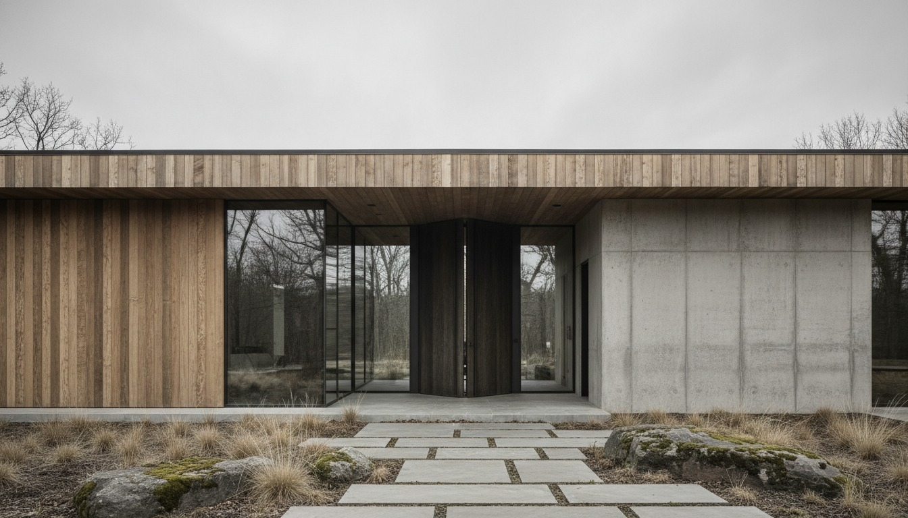

The video walks through Midjourney, Nano Banana Pro, Veras, and Rendair. It shows convincing exteriors generated in under a minute. It contrasts that with the multi-week turnaround a traditional viz studio quoted for a still in 2023. The conclusion is dramatic, the math is clean, the framing makes for a satisfying narrative. The framing is also wrong.
What is dying is not architectural visualization. What is dying is one specific service inside architectural visualization. The category survives. The category gets honest. And the studios that have been quietly billing for the wrong thing are the ones in trouble.
What the doom video gets right
The "single still, pretty, finished" deliverable is now a commodity. Three years ago a marketing-grade architectural still cost between $1,500 and $6,000 depending on complexity, took one to three weeks, and required a viz studio to model entourage, light the scene, set up camera work, render at high resolution, and retouch in Photoshop. Today an architect with Veras 4.3 inside SketchUp and a competent prompt library can produce visually comparable work in 90 minutes. The labor required to make a single beautiful image has collapsed by an order of magnitude.
If your viz studio's revenue is concentrated in single-still deliverables for marketing brochures, residential developer sales materials, or competition entries, the AI argument applies to you directly. That market is being eaten. Probably already has been, partially, in the form of architects no longer outsourcing what they can now do internally. The studios competing in that segment will compress, consolidate, or pivot.
What it gets wrong
Viz is not the still
The doom argument conflates the deliverable with the discipline. Architectural visualization, as practiced by serious studios, has never been only about producing pretty pictures. It is about translating an unbuilt building into a series of trusted images that survive scrutiny from clients, planners, neighbors, investors, and lawyers. The still is the artifact. The work is the trust.
A planning consultation hinges on whether the visualization is credible enough that a neighbor cannot accuse the developer of misrepresentation. A pre-sales campaign hinges on whether the visualization holds up against the eventual built reality. A competition entry hinges on whether the design intent reads correctly to a jury. None of that is "make me a pretty picture." All of it requires a viz practitioner who understands light behavior, material specification, regulatory documentation, and the difference between flattering and lying. AI tools produce images. They do not produce trustworthy images by default, and the gap between the two is where viz continues to earn its rate.
AI tools amplify viz studios, not just architects
The doom narrative imagines architects bypassing viz studios entirely. In practice, the studios that integrated AI early are billing more per project, not less. The pipeline has compressed at the still-production end. The newly available capacity is being redirected upstream into more views, more iterations, more design support, and downstream into VR walkthroughs, video flythroughs, regulatory dossiers, and real-time presentation. A small viz studio with one experienced lead and a Veras + Rendair + Lumion stack can now produce what required three artists in 2023. That is a productivity gain accruing to the studio, not just to the architect.
The technically correct image is now the deliverable
This is the move most missed in the doom argument. As AI tools commoditize the visually convincing image, the deliverable shifts from "pretty" to "technically correct and visually convincing." The viz practitioner's job becomes: hold the AI output accountable to construction reality. Match the actual material schedule. Cast shadows that respect the site's actual latitude and date. Render entourage that respects local code on visibility splays, paving widths, and tree species. Produce a still or sequence that survives cross-examination from a planning officer who has seen too many flattering renders. That work is harder than what came before, not easier, and it commands a higher rate.
The viz studios that survive
Three profiles will do well over the next 18 months.
The technically embedded studio
Studios that run inside their clients' BIM models, accept Revit and ArchiCAD exports as the source of truth, maintain a working knowledge of the project's actual material spec, and treat AI tools as an accelerator on top of that discipline. These studios are not in the prompt-engineering business. They are in the validation business. AI gives them a 5x productivity multiplier on top of the same hard work they were already doing. Rates per project stay similar, throughput climbs, margins improve.
The medium-grade specialist
Smaller boutique viz studios that focus on a specific category (hospitality, residential development, public infrastructure) and develop deep AI fluency inside that specialism. The architect generalist with Veras can produce a credible hotel exterior. They cannot produce a Mediterranean-coast hotel exterior at golden hour, with the specific entourage typology a developer's brochure needs to attract the specific buyer segment, in three hours flat. The specialist can.
The hybrid creative
Visualization studios that recognize they are now in the moving-image business, not the still business. Real-time walkthroughs, VR previews, video flythroughs, AI-extended construction sequencing. These are not deliverables AI tools currently produce well end to end. They require visualization craft, software pipeline knowledge, and the ability to integrate AI outputs into longer-form media. The market here is growing, not shrinking, and the doom narrative misses it entirely.
The viz studios that will not survive
One profile is in trouble. Studios whose revenue is concentrated in mid-priced, marketing-grade still imagery for developer clients who do not require technical accuracy, do not require regulatory submission, and were paying for "pretty" rather than "true." Those clients will pivot to in-house AI workflows over the next 12 months. Some already have. The studios that built businesses around that work need to pivot upstream (into design support and validation) or downstream (into moving image and real-time) within the next 18 months. Standing still is the failure mode.
What architects should actually take from this
The architects we know who got the most out of the last 24 months treated viz studios as collaborators, not vendors. Architects who used Veras and Rendair to expand their own capacity for early-stage exploration, then brought in viz studios for the work that required the discipline: planning, presentation, marketing. That posture remains correct. The argument is not whether to bring AI into the practice. The argument is what to bring viz studios in for, now that pretty pictures are no longer the bottleneck.
Get fluent in Veras and Rendair yourself, for the concept and DD-grade work your team should be doing in-house. Bring in viz studios for the projects where someone needs to defend the image in front of a planning officer, a developer's investor pitch, or a jury. Pay your viz collaborators more, not less. The work they do for you now is more strategic and the AI productivity gain shows up in your fee structure, not theirs.
Viz is not dying. The conversation is just finally getting honest about what viz was actually being asked to do.
The practitioner's stack
The AI rendering tools Vista Studios trusts in 2026, organized by phase and use case. Veras, Rendair, Spacely, Midjourney, and where each one earns its seat.
Read the 2026 stack guide →A practitioner essay, not a tool review. Based on five years of small-studio practice and conversations with viz collaborators in three markets.